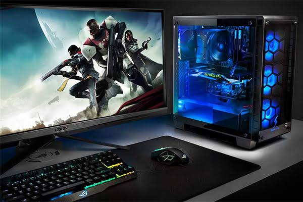
Computadora Gamer
Equipo de alto rendimiento para disfrutar videojuegos con buenos gráficos, velocidad y fluidez.
Ver másDescubre la tecnología que lleva tus partidas al siguiente nivel
Explora nuestra selección de productos tecnológicos diseñados para mejorar tu experiencia de juego. Encontrarás computadoras, consolas, componentes y accesorios para diferentes tipos de jugadores.

Equipo de alto rendimiento para disfrutar videojuegos con buenos gráficos, velocidad y fluidez.
Ver más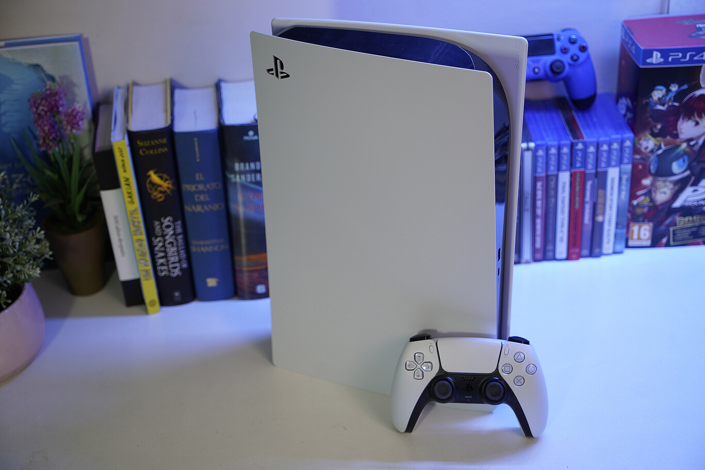
Consola de Sony con gráficos avanzados, tiempos de carga rápidos y juegos exclusivos.
Ver más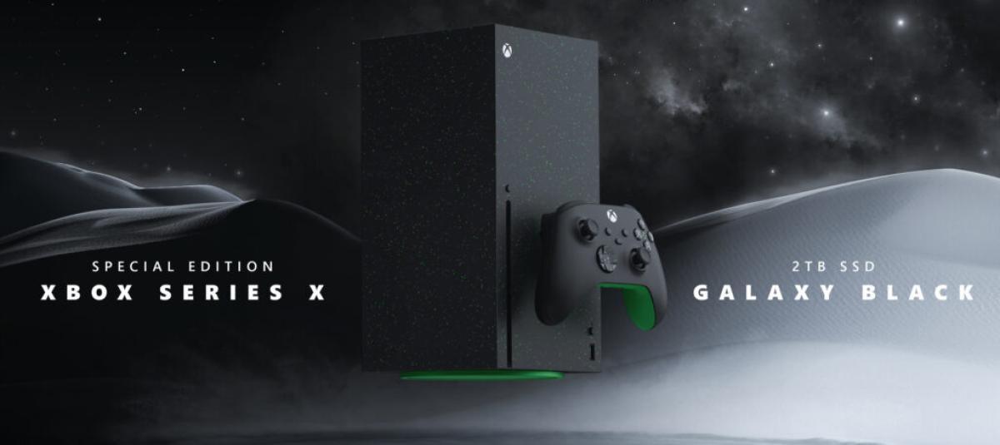
Consola de Microsoft que ofrece potencia, resolución 4K y una amplia biblioteca de juegos.
Ver más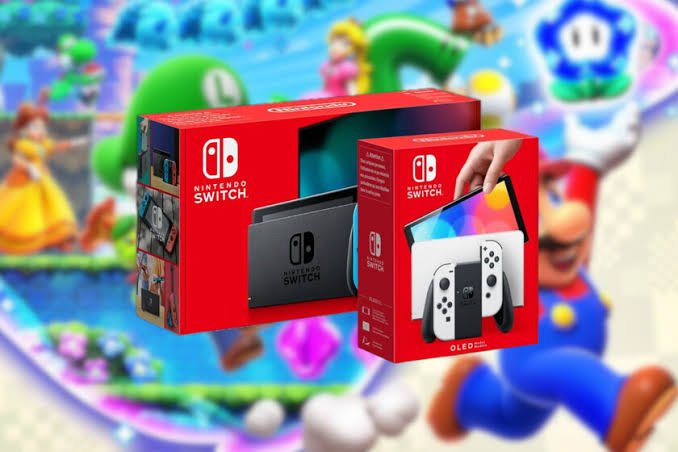
Consola híbrida que permite jugar tanto en casa como en cualquier lugar.
Ver más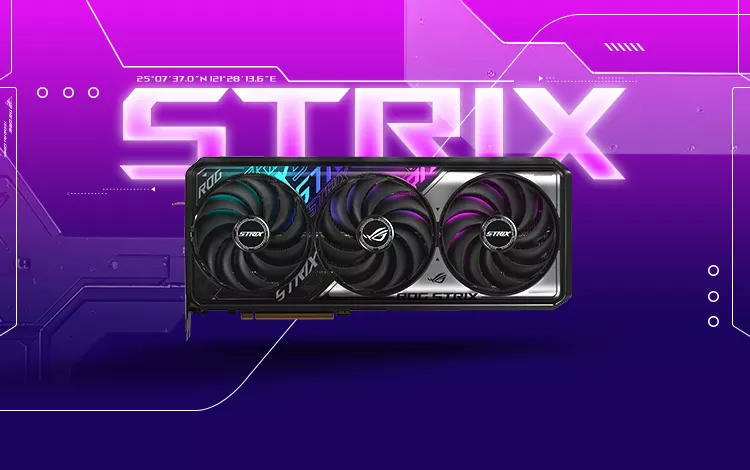
Componente encargado de procesar los gráficos y mejorar el rendimiento visual de los juegos.
Ver más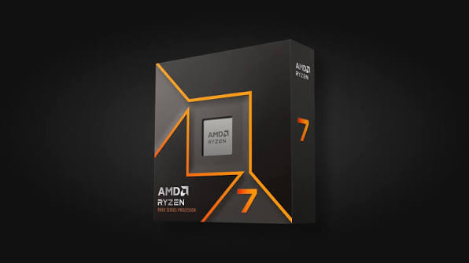
Procesador diseñado para ofrecer velocidad y capacidad de respuesta en juegos y aplicaciones.
Ver más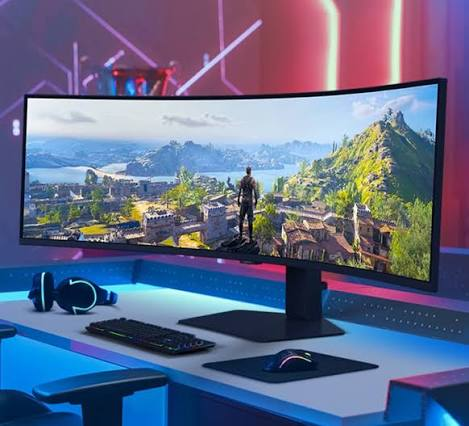
Pantalla diseñada para ofrecer imágenes nítidas, buena resolución y movimientos fluidos.
Ver más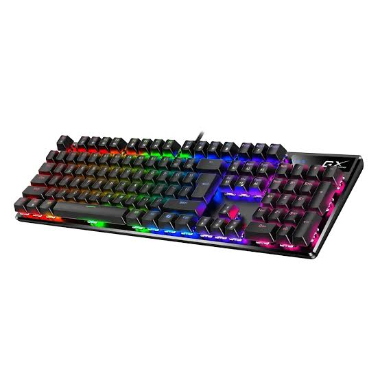
Accesorio con interruptores mecánicos que ofrece precisión y comodidad al escribir y jugar.
Ver más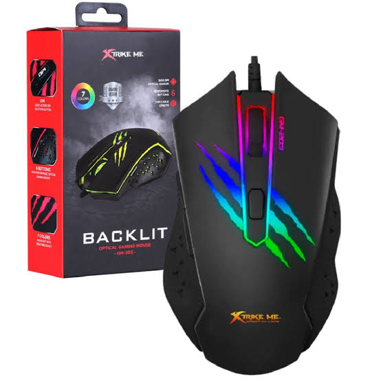
Ratón con sensor de precisión y botones configurables para mejorar el control.
Ver másPermiten escuchar efectos y sonidos del juego con mayor detalle y comunicarse con otros jugadores.
Ver más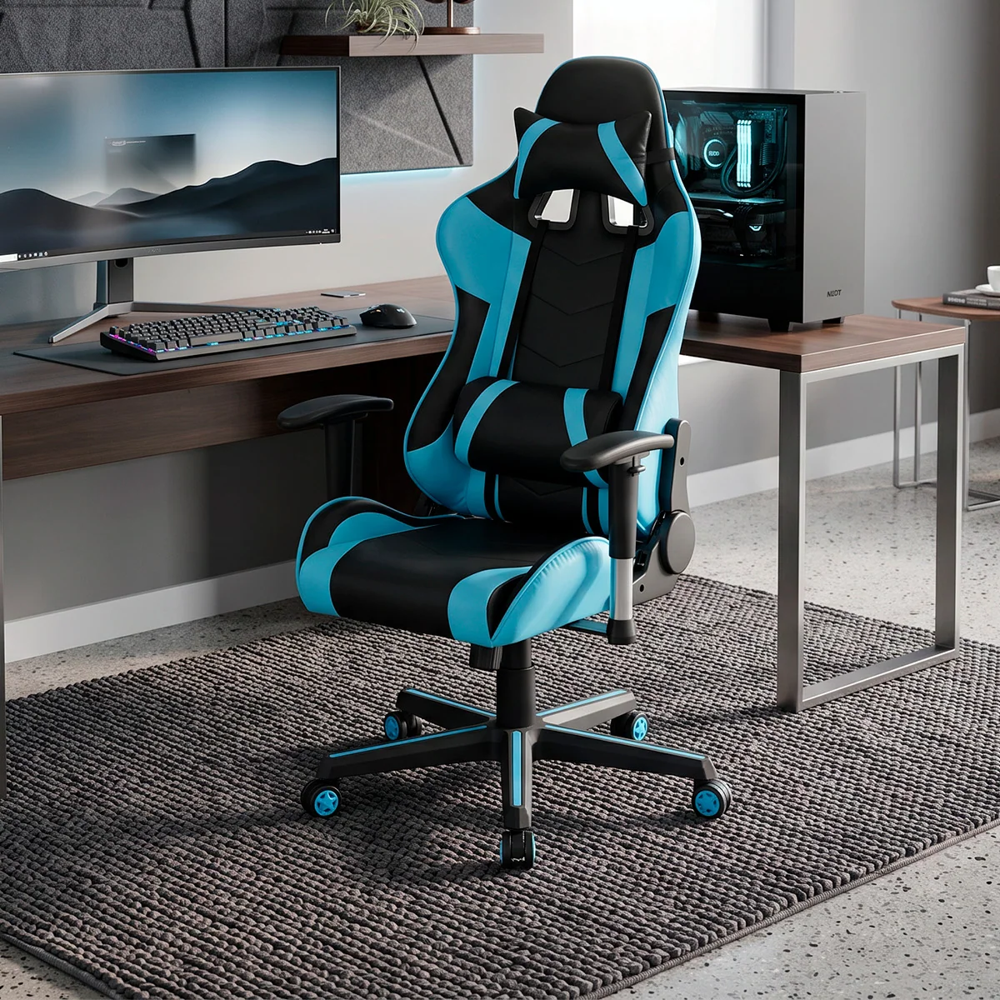
Asiento diseñado para brindar comodidad y soporte durante largas sesiones de juego.
Ver más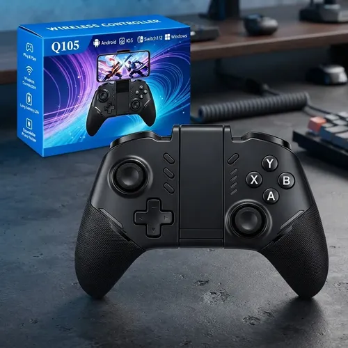
Mando que permite controlar videojuegos con comodidad y libertad de movimiento.
Ver másElegir buenos componentes y accesorios puede mejorar tu experiencia de juego. Investiga las características de cada producto antes de elegir el equipo adecuado.
Conocer nuestra comunidad